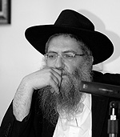
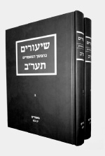

The Rebbe Wants Every Chassid to Learn Ayin-Beis
This Shavuos marked 100 years since the beginning of the recitation of the maamarim known as “Hemshech Ayin-Beis.” We spoke to the rosh yeshiva of Daas in Rechovos, Rabbi Yitzchok Arad, who gives classes in these maamarim, about their significance in the life of a Chassid nowadays, 100 years since t

In this hemshech, fundamental topics in Chabad Chassidus are explained in a unique way not seen elsewhere. Until our generation, only a small portion of the hemshech was available in the form of photocopies of handwritten text. It was first in 5737/1977 that the entire hemshech was published.
Since the hemshech was published, it is a fundamental text for those who learn Chassidus, especially those who are advanced students, because the principles of Chassidus Chabad are explained in an unusually clear and organized way. In this hemshech, the principles in Chassidus of haskala (Chassidic vernacular for the labor of the mind to conceptualize/comprehend the abstract spiritual/divine realities explicated in Chassidus) and avoda (Chassidic vernacular for the labor of the heart to relate/connect to those realities and to transform one’s character and behavior accordingly) are explained in clear language and as a “set table,” until every topic is thoroughly elucidated.
This past Shavuos marked 100 years since the start of the hemshech, and so we spoke to Rabbi Yitzchok Arad, rosh yeshiva of Daas in Rechovos, who has been giving shiurim in these maamarim for over sixteen years.
Not only talmidim in the yeshiva participate in the shiur, but also local balabatim attend. We asked R’ Arad about these maamarim and their relevance to all.
The series of maamarim Hemshech Ayin-Beis has a strong haskala orientation, as opposed to maamarim of avoda. Do maamarim of haskala also have the ability to affect a man’s soul, to change his conduct etc., or is their spiritual impact primarily indirect?
Even in the maamarim of Ayin-Beis there are parts and inyanim that are in the style of avoda. There are topics in avoda that are explained at length, in great detail, like the general style of the hemshech which explains everything at length. Take for example, the end of volume one where there is a lengthy explanation on the topic of Tohu and Tikkun and there are analogies that are very helpful in explaining what bittul is and how bittul allows the essence to be revealed. Although this is connected to haskala, a Chassid can learn a lot from it about avoda.
However, the hemshech deals mainly with deep matters of haskala. When a Jew learns them, especially a Chassid, the very study of Chassidus changes his outlook on the reality around him.
When a person looks at the world around him, he constantly sees the physical as reality, as though there is something aside from G-d. But when a Jew delves into the details of the Seder Hishtalshlus (order of the chain of spiritual “worlds”) and internalizes the fact that all of perceived reality is external, then afterward when he goes into the world, the world appears less imposing to him and consequently less obstructing and disorienting.
That is one of the points that characterize the maamarim of Ayin-Beis. The deepest inyanim are explained intelligibly. When a person understands s’firos and lofty levels in a tangible way, it has a direct effect on his soul. This is the purpose of Chassidus, that we be able to understand the greatness of the Creator, each of us in our own way. There is no doubt that knowledge of the greatness of the Creator has the ability to change one’s middos and to provide one with a different way of approaching G-d.
Hemshech Ayin-Beis is unique in that it is entirely haskala. The Rebbe Rayatz says that someone who learns it can feel Gan Eden, because in these maamarim, the Rebbe Rashab took the deepest concepts of Chassidus and brought them down into human intellect in a way that everyone can understand. This seems to provide spiritual delight, but is there any connection to the avodas ha’middos?
In general, in learning Chassidus there are several aspects. The Alter Rebbe teaches in Tanya, in Kuntres Acharon, that studying p’nimius ha’Torah is a “high and lofty mitzva etc. and leads to a whole heart.” This means that, as the Rebbe notes in one of the maamarim, in studying p’nimius ha’Torah there are two aspects. Aside from it leading to a “whole heart,” that a person changes his middos and refines them because of his learning, the learning and knowledge of p’nimius ha’Torah (in and of itself) is a “high and lofty mitzva.” In other words, knowing the Seder Hishtalshlus and all the deep details in p’nimius ha’Torah is important in its own right.
In the sicha of Shabbos Parshas Lech Lecha 5752, the Rebbe explains that learning p’nimius ha’Torah is a preparation for the Era of the Future; learning lofty matters of the intellect is a taste of the learning of the Future Era. And that is why it is important in itself.
One of the chiddushim of Chassidus is to provide us today with G-dly knowledge as a preparation for Geula, at which time the occupation of the entire world will only be to know G-d. In the Future, people will literally see what we can only learn of now in deep maamarei Chassidus.
Our Rebbeim said about this hemshech that it contains “great things and wonders even compared to other hemshechim, and in it are explained all the deepest inyanim of Chassidus as ordinary, tangible things.” Surely, by learning this hemshech one fulfills this “high and lofty mitzva” in an optimal way.
At the same time, as lofty as this learning is, it has to affect the middos even if this sometimes happens in a roundabout way.
In the HaYom Yom for 6 Teves there is an explanation on the verse “Know the G-d of your father and serve Him with a whole heart”: that all knowledge, even of the deepest things, needs to be translated into avoda, i.e. a refinement of the middos and an inner hiskashrus (bond with “the G-d of your father”), which in Chassidus is called avoda.
What is the definition of avoda?
It is that even abstract things need to be translated into refining the middos. If a person has a talent for hafshata (lit. undressing, i.e. abstraction) or halbasha (lit. dressing up, i.e. concretization), he can learn a lot from Ayin-Beis about how to behave in the house, how to raise children, and so on. All of these are things that can be extrapolated from the same understanding of Chassidic teachings, as deep and lofty as they may be.
Every Jew needs to find the place and time to invest – which is the chiddush of Chabad – in learning Chassidus. One can even see balabatim devoting time to learning and it has an effect on them. The hemshech was published for the public, not just for special individuals.
The Rebbe made a big deal out of the printing, because he was apprehensive about printing these maamarim. The Rebbe considered it a tremendous revelation and he asked everyone to participate in the printing. Why? So that it would be accessible just for special people? Rather, so that these maamarim would be available for every person to learn.
In Yeshivas Daas, you are mekarev people to Torah and Chassidus. Can newcomers learn these maamarim or must they learn other things first?
It is definitely preferable to learn and understand basic concepts of Chassidus first by learning Tanya, Derech Mitzvosecha, etc. If someone starts with this, and is willing to put in the effort, and has a strong desire for it, he can sit and learn it, although it is harder. I have personally seen young men whose first Chassidic work is Hemshech 5666 and it definitely helped them advance.
I knew someone who was at the beginning of his journey towards Chabad who came across the maamarim of Ayin-Beis. He had no prior knowledge and was not proficient in Chabad concepts. He didn’t know that this is a deep work and that there are easier s’farim that are generally recommended for beginners. Yet he made the effort to learn and it certainly filled his neshama.
There is a special emphasis on learning this hemshech this year which marks 100 years since it was begun. At the same time, it shouldn’t be at the expense of basic learning. Everyone should consult with his mashpia about what is best for him to learn.
What makes Hemshech Ayin-Beis different than other maamarim of the Rebbe Rashab?
The Rebbe said that in these maamarim concepts are explained at length and it contains wondrous things that are not even in Hemshech 5666.
We don’t really have the ability to assess the deeper transcendental aspect the Rebbe talks about, to appreciate the true depths of the concepts. We are merely simple people who learn and can see how things are explained at length and how one is more readily able to grasp the topics in these maamarim. As opposed to other maamarim, in these maamarim there is a lengthy continuity, and in order to understand the concepts well, a person needs to learn slowly and patiently, one maamer after another. It takes time. Learning in this way draws the person into the topics being explained. The right way to do it is to devote time to it and review the material.
How do you translate what you learn into daily life?
As in the quote from the HaYom Yom mentioned earlier, a Chassid needs to believe that he can extract lessons in avoda and the refinement of middos from even deep topics. When he believes that it pertains to him, he will look for the relevance within the haskala of the maamarim.
But not everyone is capable of learning about “memalei,” “sovev,” and “mochin d’abba” and deriving anything from it for daily life!
A Chassid needs to invest into his learning of Chassidus, and learn a lot of it, while knowing and believing that Chassidus is his guide in life in the most practical way. He can also learn lessons from the analogies and explanations in the hemshech, since Chassidus explains the most abstract things for the express purpose of drawing down G-dliness into the lower realms and using that to carry out the birur (spiritual refinement) of that which is lowly.
The function of this birur, insofar as the human being is concerned, is to change the person and bring about an increase in the basic Ahavas Yisroel within each of us, strengthening our bitachon, and revealing the emuna that is inherent in the portion of G-d within us, thereby also increasing simcha.
If a Chassid approaches these maamarim fearing that they won’t pertain to him and are too lofty for him, then it won’t be relevant and he won’t relate to it. We can’t denigrate ourselves. In order to feel connected a Chassid needs courage, and maybe even a bit of pride in the positive sense, in order to know that it pertains to everyone and is written specifically for him. After all, it was printed for us.
One of the chiddushim of Chassidus is the goal to bring G-dly haskala into the world. This is primarily what the Rebbeim did. In Chassidus there are many lofty “lights,” and they need to be brought down into our behavior, our middos, fixing our middos, etc.
Can you give us an example of a point mentioned in these maamarim, and how one goes about ensuring that it causes an improvement in him spiritually?
One of the basic concepts in Chassidus is the need for bittul (self-negation). On a basic level, this means allowing room for someone else; bittul is the opposite of yeshus (lit. substantiveness, i.e. arrogance, ego) which estranges a person from his fellow man. Bittul leads to Ahavas Yisroel, while yeshus leads to quarrels. Yeshus is present in all aspects of a person’s life; it interferes in community life, in family life, and in his relationship with the world. True bittul allows for achdus.
How do we understand this? Does it mean that in order for a person to attain the ability to connect with another he needs to negate his existence, his value, his essential importance which seems to be the concept of yeshus?
There is a fundamental piece in Hemshech Ayin-Beis that clarifies this subject and gives us the tools to properly experience our awareness of ourselves. The Rebbe Rashab explains two levels of self-awareness: the awareness of a king and the awareness of a minister. We can take these two kinds of consciousness and find them within ourselves.
I’ll try to summarize the idea. The Rebbe explains that the term melech b’etzem (inherent kingship) expresses the quality the king has before he is revealed to the people, for he is a king even before he rules the people. Although there are levels of elevated stature and not everyone can rule over a large kingdom, a king will still not attempt to rule over a country that does not suit him, for the concept of king is that he expresses the degree of elevation that he has within him inherently and not that which he doesn’t have.
The elevation of a minister, by contrast, does not express what he really is, but how others elevate him. And therefore, explains the Rebbe, this tends towards exaggeration since it doesn’t come from an accurate assessment of his essential worth but from an assessment made by those around him who exalt him. This is why a minister is likely to try to lift himself up even beyond where the people have elevated him. This is a dangerous state of affairs because it is not his true worth and he can fall, i.e. lose all the qualities he acquired relative to his environment.
Using this analogy of the king and the minister, the Rebbe explains the difference between bittul consciousness and yeshus consciousness:
The sense of loftiness of the minister is called yeshus since there is a sense of his worth and importance that causes him to look down on everyone else. Why does he do this? Because he doesn’t have an intrinsic sense of self worth. His standing is assessed in comparison to others, which is why he needs to denigrate others in order to be worth something himself. If the other person has value, he cannot feel his own importance.
However, says the Rebbe, belittling others comes from attributing too much significance to the other person. In other words, since his value hinges on the other person, the other person becomes a key factor in determining his own personal worth, which is why he feels threatened by him. This is like the person who cares too much about other people’s opinions, and as such feels the need to disparage others in order to feel greater than they.
The elevated quality of the king is intrinsic; therefore he doesn’t feel threatened by another person. Nobody can take away or provide him with what he already really is.
That’s the idea as it appears in the maamer. If we take this idea and apply it to our world, we can see that there are two forms of consciousness and self-valuation existing within a person:
The first is an evaluation of self based on what others think, i.e. the person’s sense of self worth hinges on the other person. The person, in and of himself, lacks any intrinsic value and it is only in the context of his interactions with the environment that his worth is established. Since he is raised above others, they admire and respect him. He considers himself valuable because of his achievements. But without all this, in his own right, he does not have value.
The second is an essential evaluation, i.e. the person assesses himself without any dependency on others, but only in terms of what the person himself is, and not because of what people give or take from him. Naturally, there is a give and take relationship between him and others and his self worth is expressed in his relationship with others, but the inner and essential core of his self-value is not dependent on others.
These two forms of consciousness seem alike, since to the observer it looks as though in both cases, the person values himself. Nevertheless, there is a vast difference between them. The value which is dependent on others is called yeshus in Chassidus, and it is the source of quarrels and hatred. Essential value which comes from the essence of a person is called bittul in Chassidus and it is the source for the ability of truly connecting with others.
Developing a consciousness of self-valuation which is not dependent on others will open up the possibility for true love for them and the ability to get close without being frightened or threatened by the other’s existence. Regarding a self worth which comes from yeshus, a person will only want to connect with those who make him feel good and better than they are, since the very fact that they are lower than he is and raise him up provides him with a sense of importance and self worth.
This is one of the fundamental ideas which enable us to understand what consists of proper awareness of self, the proper way for a person to relate to himself. The modern vernacular speaks a lot of the idea of “self-awareness,” but in the maamarim of Ayin-Beis it speaks about it in a much deeper way and at great length as it explains how the ability to be inclusive of others comes from a place of essential being, and not at the expense of one’s true being. When a person feels that he has his place, this enables him to give to others and to receive from others without feeling diminished thereby.
Here is a most basic idea with its correct outlook, as there is no term more basic than bittul (and yeshus). With the explanations in Hemshech Ayin-Beis, we have a completely different understanding of terms that are so often repeated, but not necessarily properly understood. With this new perspective, we now feel that what Hashem gave us suits us, and this enables us to respects others and be battul to others. This outlook does away with nonstop fighting.
It’s a wonderful example of lofty concepts that appear in the hemshech from which we can derive applications for our daily lives.
I know that professionals such as psychologists attend your classes. What do they think of these ideas?
In my experience, the more people study the psyche and understand it according to current theories, the more amazed they are by Chassidic ideas about the psyche.
What is your message in this hundredth year since the maamarim were said?
At this time, when everything is ready for the Geula and the Rebbe says we need to live Geula, i.e. that G-dliness is out in the open and we just need to open our eyes to see it, one of the important ways of doing so is by learning Maamarei Chassidus in general and specifically the Hemshech Ayin-Beis.
TWO VOLUMES AND THE THIRD IS ON THE WAY

All the acronyms are spelled out in full and the words in Yiddish are translated.
Within the text of the maamer is an easily understood explanation, helping the reader follow the flow and explaining difficult concepts.
While learning, the reader can keep track of the topics and see how the hemshech is divided into topics and sub-topics.
In the margins are numerous sources and even quotes from other maamarim and s’farim that the Rebbe refers to in the maamer.
At the beginning of every chapter there is a heading that summarizes the topic addressed in that chapter. Likewise, within each chapter there are divisions into sub-chapters. At the end of each maamer there is a summary of the maamer, which helps preserve the flow between maamarim and divide them into topics.
Occasionally there are charts which help organize the material explained in the maamer in a cohesive fashion.
The s’farim are divided in such a way that each volume contains an entire topic that can stand alone, relatively speaking. Thus far, thirty-one maamarim have been elucidated, which is a significant portion of Volume 1 of Hemshech Ayin-Beis.
The books are an excellent resource for learning the hemshech and helping the reader understand the topics explained.
The first two volumes that were published so far were well received by those who study Chassidus.
Menachem Ziegelboim. "The Rebbe Wants Every Chassid to Learn Ayin-Beis." Beis Moshiach, no. 841 (July 12, 2012).